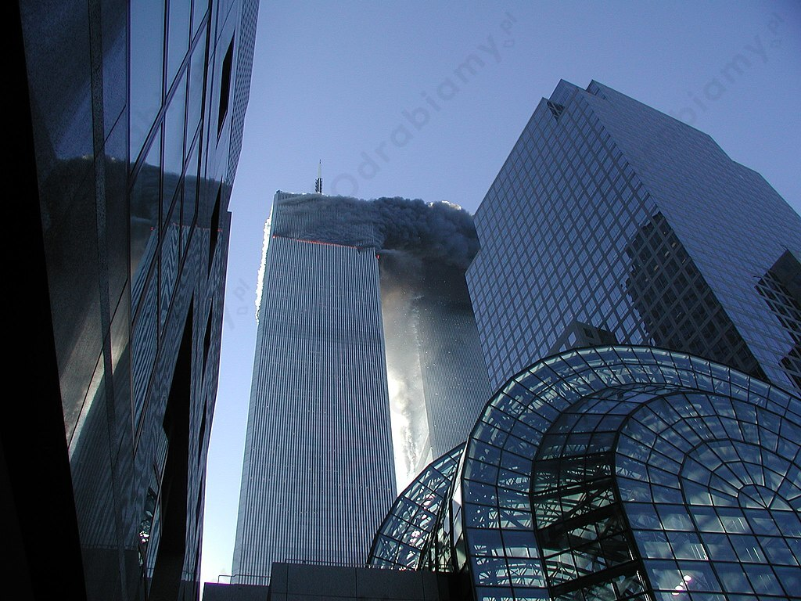

Zadanie 1
Przykładowe korzyści wynikające ze zjawiska globalizacji:
- nasilenie mobilizacji i przepływu dóbr, kapitałów i siły roboczej w skali ogólnoświatowej,
- rozwój transportu, komunikacji, telekomunikacji,
- szybki przepływ informacji w mediach,
- traktowanie przez podmioty gospodarcze całości globu jako jednego rynku,
- utworzenie międzynarodowych instytucji finansowych,
- liberalizacja handlu międzynarodowego,
- likwidacja barier celnych,
- swobodna wymiana walut,
- wolność w przepływie kapitału,
- łatwiejszy i szybszy dostęp do wiedzy - korzystnie wpływa na rozwój społeczeństwa i wzrost poziomu wykształcenia,
- wzrost tolerancyjności - zmniejsza ilość konfliktów wśród ludności,
- międzynarodowy rynek pracy - możliwość pracy w innym państwie stanowi alternatywę w przypadku braku zadowalającej pracy lub płacy w ojczystym kraju.
Przykładowe zagrożenia wynikające ze zjawiska globalizacji:
- narastają nierówności społeczne wskutek nierównomiernej dystrybucji dóbr, usług i finansów,
- dochodzi do wyparcia firm krajowych / lokalnych,
- na rynku dominują produkty z Azji (np. Chin, Korei),
- dochodzi do dominacji społeczeństwa konsumpcyjnego nad twórczym,
- rodzimy kapitał podmiotów gospodarczych jest wypierany przez międzynarodowe korporacje,
- następuje odpływ wysoko kwalifikowanych pracowników do państw wyżej rozwiniętych,
- dochodzi do koncentracji inwestycji w określonych regionach świata,
- w pogoni za zyskiem ignoruje się sprawy z ochroną środowiska,
- zatrata różnorodności obyczajów, kultur i języka,
- kultura, praca i życie poddawane są bezwzględnym prawom rynkowym,
- zatracenie wartości,
- zatrata więzi społecznych, które powodują zagubienie i osamotnienie ludzi,
- wzrost znaczenia marketingu, który ma znaczący wpływ na trendy.
Zadanie 2
Skutki ataków terrorystycznych na USA w 2001 r.:
-
zginęło 2996 osób (2977 ofiar i 19 terrorystów),
- szok, panika, rozpacz oraz poczucie solidarności i nadzieja,
- ogłoszenie przez prezydenta George'a W. Busha "wojny z terroryzmem" (działania militarne prowadzone przez USA oraz inne państwa mające na celu unieszkodliwienie międzynarodowych grup terrorystycznych oraz uniemożliwienie wspierania ich przez "państwa zbójnickie"),
-
atak USA i sojuszników na Afganistan rządzony przez talibów, gdzie przebywał Osama bin Laden,
-
zwiększenie środków bezpieczeństwa na lotniskach, w innych miejscach publicznych skupiających duże grupy ludzi,
- wprowadzenie ustaw antyterrorystycznych (ograniczających jednocześnie prawa obywatelskie) w wielu państwach,
- pomimo wzmożonych działań antyterrorystycznych we wszystkich krajach Europy Zachodniej doszło wkrótce do kolejnych ataków islamskich terrorystów,
- poważny kryzys w branży lotniczej i turystyce,
- straty materialne i infrastrukturalne,
- zmiana świadomości i zachowań społecznych,
- światowy terroryzm zagraża obecnie pokojowi na całym globie.

Płonące wieżowce WTC z World Financial Center, źródło zdjęcia: Wikimedia Commons.
Zadanie 3
Zagrożenia współczesnego świata:
- podział świata na bogatą Północ i biedne Południe,
- zamachy terrorystyczne,
- przestępczość zorganizowana,
- kryzys klimatyczny,
- konflikty zbrojne między państwami,
- głód,
- nadmierny przyrost naturalny na Południu,
- niekontrolowane migracje,
- klęski przyrodnicze,
- pandemie i choroby zakaźne,
- globalizacja.